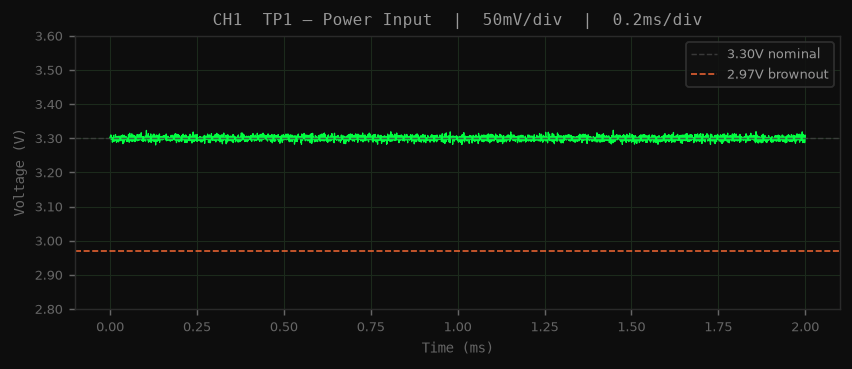
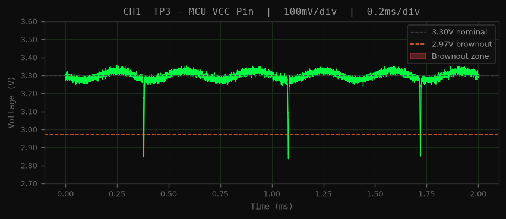

Symptom: MCU (U1) resets intermittently during normal operation. The 3.3V rail reads nominal at the power input connector (J1), but U1 triggers brownout reset. No visible physical damage.


3.30V DC at TP1. Source is nominal — fault is downstream.
3.18V DC at TP3 — 120mV below input. DC alone
doesn't reveal the resets, but confirms resistive loss on the net.
Tools → PCB Inspector → inspect +3V3 net trace impedance.